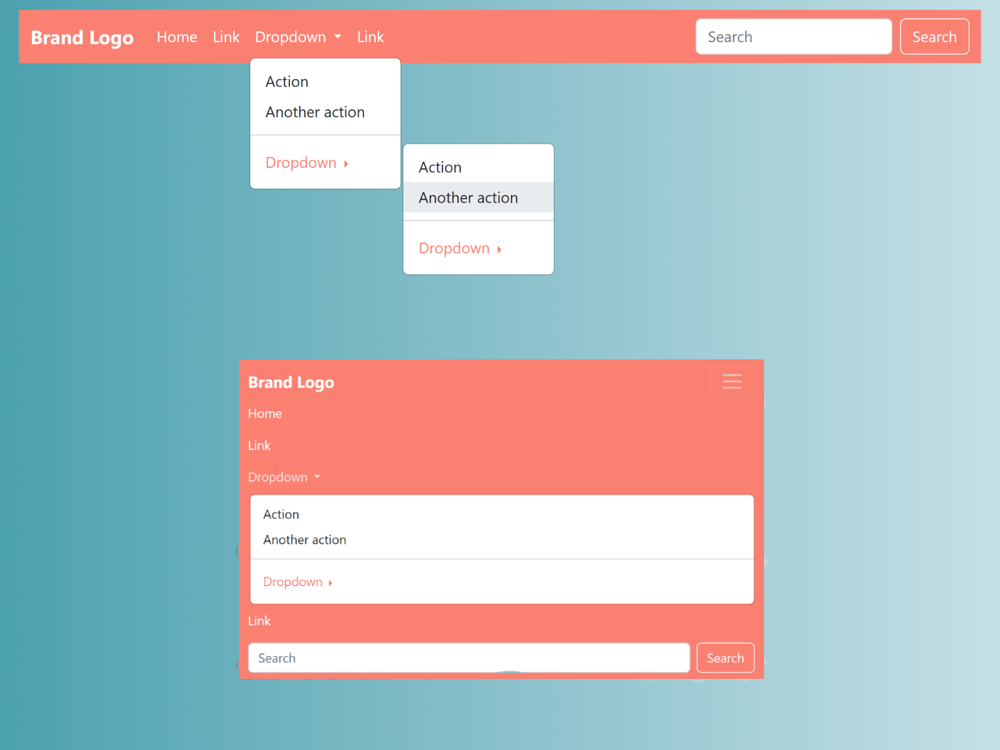
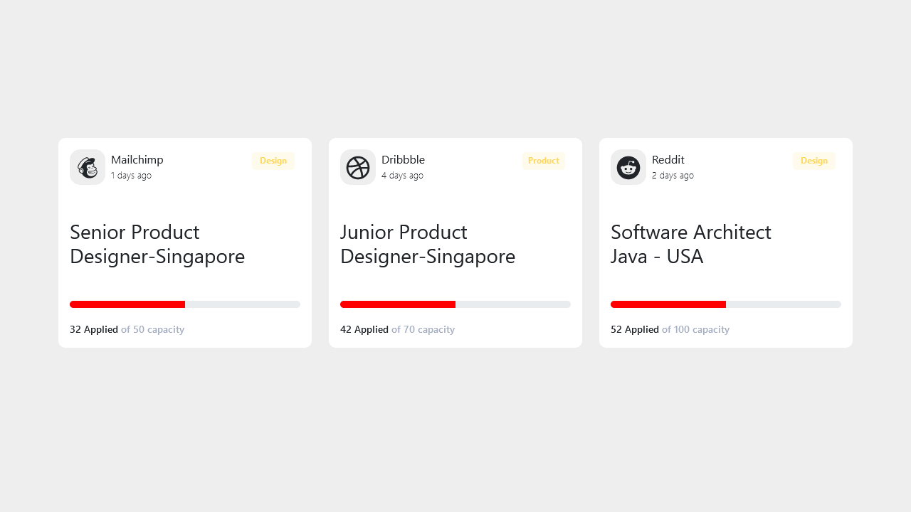

W poniższym bloku będziecie mogli testować właściwości takie jak:
- d-
- m- i p- czyli znane nam marginesy i paddingi
- klasy row i container fluid
- text- pozycja tekstu
d- klasa ta w bootstrapie jest predefiniowana i pomaga nam w umiejscawianiu diva. moim ulubieńcem, i wielu innych nowoczesnych programistów jest d-flex ze względu na przejrzystość intencji do pozycjonowania.
liste rodziny d- możecie zobaczyć wpisując w przeglądarke display site:getbootstrap.com
m-(1-6) i p-(1-6) klasy te są również wbudowane w bootstrapa i są pokazane poniżej pobawcie sie pozmieniajcie wartości i zobaczcie jak sie zmienia układ
Klasa row to na chlopski rozum "wierszowany" układ divów czyli jak divy normalnie by sie ukladaly jeden pod drugim to tutaj te divy DOPÓKI SIE MIESZCZA NA EKRANIE to ukladają się w wierszu czyli od lewej do prawej
Natomiast container-fluid traktujmy jako pojemnik który ma za danie trzymać rzeczy w nim tak aby się za niego nie wylewały,
czyli tak samo jak butelka wody chroni wode przed wylaniem się poza butelke to tak samo container-fluid ma za zadanie nie pozwolić niczemu w środku wyjść poza układ strony, strukture stylów CONTAINER-FLUID można manipulować
<!DOCTYPE html>
<html lang="pl">
<head>
<meta charset="UTF-8">
<meta name="viewport" content="width=device-width, initial-scale=1.0">
<title>Przykład użycia klas Bootstrap</title>
<link href="https://cdn.jsdelivr.net/npm/bootstrap@5.3.0-alpha1/dist/css/bootstrap.min.css" rel="stylesheet">
</head>
<body>
<!-- Container-fluid, który "trzyma" całą zawartość -->
<div class="container-fluid p-5 bg-light">
<h1 class="text-center">Przykład użycia klas Bootstrap</h1>
<!-- Sekcja z marginesami i paddingami -->
<div class="d-flex flex-column align-items-center p-3 m-4 bg-secondary text-white">
<h2 class="mb-4">Marginesy i Padding</h2>
<p class="m-5 p-5 bg-light text-dark">
Zmieniaj wartości klas <strong>m-(1-5)</strong> (margines) i <strong>p-(1-5)</strong> (padding), aby zobaczyć różnice w odstępach.
W tym przypadku margines to <code>m-5</code>, a padding to <code>p-5</code>.
</p>
</div>
<!-- Row i Container-fluid -->
<div class="container-fluid bg-primary text-white p-3 my-5">
<h2 class="text-center">Przykład z row i container-fluid</h2>
<div class="row">
<div class="col-md-4 bg-light text-dark p-3">
<p>Div 1: Używamy klasy <code>row</code> oraz <code>col-md-4</code>. Kiedy przeglądarka jest szeroka, divy układają się w jednym wierszu.</p>
</div>
<div class="col-md-4 bg-light text-dark p-3">
<p>Div 2: Każdy div ma klasę <code>col-md-4</code>, co oznacza, że zajmuje 1/3 szerokości na średnich i większych ekranach.</p>
</div>
<div class="col-md-4 bg-light text-dark p-3">
<p>Div 3: Gdy okno przeglądarki jest węższe, divy układają się jeden pod drugim.</p>
</div>
</div>
</div>
<!-- Przykład z d-flex -->
<div class="d-flex justify-content-around bg-success text-white p-5">
<div class="bg-light text-dark p-3">
<p>Element 1: Używamy <code>d-flex</code>, aby ułożyć elementy w jednej linii.</p>
</div>
<div class="bg-light text-dark p-3">
<p>Element 2: Możemy manipulować ich położeniem, używając klas takich jak <code>justify-content-around</code>.</p>
</div>
<div class="bg-light text-dark p-3">
<p>Element 3: Eksperymentuj z innymi opcjami, jak <code>justify-content-between</code> lub <code>align-items-center</code>.</p>
</div>
</div>
<!-- Przykład pozycjonowania tekstu -->
<div class="container mt-5">
<h2 class="text-center">Pozycjonowanie tekstu</h2>
<p class="text-start">Tekst wyrównany do lewej (text-start)</p>
<p class="text-center">Tekst wyśrodkowany (text-center)</p>
<p class="text-end">Tekst wyrównany do prawej (text-end)</p>
</div>
</div>
</body>
</html>
W poniższym bloku dowiecie sie jak zmieniać:
- wielkość
- grubość
- Wielkość wcięcia
Jak można się domyślić bootstrap przychodzi z rozwiązaniem nawet z czcionakmi, tutaj kilka przykładów jak możemy manipulować czcionką.
Wielkość czcionki możemy zmieniać również przez klasy, pamiętamy nasze elementy `h1, h2, h3, h4, h5, h6`, bootstrap własnie tych elementów używa do zmiany czcionki
Dlaczego nie zwykle elementy?
Odpowiedź jest prosta. Przez wygode. Używając jedynie klasy np h1 w znaczniku "p" jesteśmy w stanie poprostu zmienić wielkość czcionki i deklarujemy to tylko raz i nie musimy zamykać tagu
rozwiązanie te jest dla wszystkich leniwych programistów którym nie chce sie zamykać tagu. poza tym ciekawostka jest to, że jak użyjemy w tagu h1 np klasy h2 to czcionka będzie wielkości h2.
Grubość czcionki możemy zmieniać za pośrednictwem poprzedzających rozmiar pogrubienia prefiks "fw"(czyli font-weight) przykładami wbudowanymi grubościami jakich możemy użyć są: fw-bold fw-bolder fw-semibold fw-medium fw-normal fw-light fw-lighter fst-italic(kursywa) fst-normal
Do wielkości wcięcia używamy marginesów czyli my- i mx-, my działa na oś Y mx działa na oś X. powoduje to charakterystyczne wcięcie w tekście. co nadaje książkowy efekt.
<link href="https://cdn.jsdelivr.net/npm/bootstrap@5.3.3/dist/css/bootstrap.min.css" rel="stylesheet" integrity="sha384-QWTKZyjpPEjISv5WaRU9OFeRpok6YctnYmDr5pNlyT2bRjXh0JMhjY6hW+ALEwIH" crossorigin="anonymous">
<div class="container mt-5">
<!-- Przykład nagłówka z różnym rozmiarem czcionki -->
<h1 class="h1">Nagłówek H1</h1>
<h2 class="h2">Nagłówek H2</h2>
<h3 class="h3">Nagłówek H3</h3>
<!-- Przykład z różną grubością czcionki -->
<p class="fw-bold">Ten tekst jest pogrubiony (fw-bold)</p>
<p class="fw-light">Ten tekst ma cienką czcionkę (fw-light)</p>
<!-- Przykład wcięć (margin) -->
<div class="bg-primary text-white p-3 my-3 mx-5">
<p>Ten blok ma margines pionowy (my-3) i poziomy (mx-5)</p>
</div>
<div class="bg-success text-white p-3 my-5 mx-auto">
<p>Ten blok ma duży margines pionowy (my-5) i jest wyśrodkowany poziomo (mx-auto)</p>
</div>
</div>
<!-- Bootstrap JS -->
<script src="https://cdn.jsdelivr.net/npm/bootstrap@5.3.0-alpha1/dist/js/bootstrap.bundle.min.js"></script>
W poniższym bloku dowiecie sie jak zmienić kolor:
- tła dokumentu lub kontynera
- Czcionki
- przycisków
W Bootstrapie można łatwo zmieniać kolory tła za pomocą klas bg-. Przykładem może być bg-light i bg-dark więcej informacji po wklejeniu do wyszukiwarki: background color site:getbootstrap.com
Dla poszczególnych kontenerów (np. div), możesz przypisać im jedną z wielu dostępnych klas, np. bg-primary, która nadaje niebieskie tło, bg-warning dla żółtego tła, itp.
W Bootstrapie możesz łatwo zmieniać kolory tekstu za pomocą klas text-*, przykładem może być text-light i text-dark, (colors site:getbootstrap.com)
Jak już załapaliście to z przyciskami działa też taka sama nazwa kolorów z wyjątkiem że prefiksem koloru jest btn-, czyli przykładem może być btn-success lub btn-danger
<link href="https://cdn.jsdelivr.net/npm/bootstrap@5.3.3/dist/css/bootstrap.min.css" rel="stylesheet" integrity="sha384-QWTKZyjpPEjISv5WaRU9OFeRpok6YctnYmDr5pNlyT2bRjXh0JMhjY6hW+ALEwIH" crossorigin="anonymous">
<div class="container mt-5">
<!-- Przykład zmiany koloru tła dokumentu -->
<body class="bg-light">
<!-- Nagłówek z niebieską czcionką -->
<h1 class="text-primary">Nagłówek z Niebieską Czcionką</h1>
<!-- Kontener z żółtym tłem i szarym tekstem -->
<div class="container bg-warning p-3">
<p class="text-dark">Ten tekst ma kolor szary, a kontener ma żółte tło.</p>
</div>
<!-- Przycisk z zielonym tłem i białym tekstem -->
<button class="btn btn-success">Zielony Przycisk</button>
</body>
</div>
<!-- Bootstrap JS -->
<script src="https://cdn.jsdelivr.net/npm/bootstrap@5.3.0-alpha1/dist/js/bootstrap.bundle.min.js"></script>
W poniższym bloku dowiecie sie jak zmienić kolor:
W Bootstrapie "Components" (komponenty) to gotowe, wielokrotnego użytku elementy interfejsu użytkownika (UI), które można łatwo wbudować w stronę internetową. Komponenty te zawierają złożone elementy HTML
z wbudowanymi klasami CSS oraz opcjonalnymi skryptami JavaScript,
które umożliwiają tworzenie profesjonalnie wyglądających i funkcjonalnych stron internetowych bez konieczności pisania złożonego kodu od podstaw.
Navbar (Pasek nawigacyjny)
Komponent, który ułatwia tworzenie pasków nawigacyjnych z opcjami menu, wyszukiwaniem i innymi elementami interfejsu, na wyciągnięcie ręki.
Cards (Karty)
Karty to uniwersalne komponenty służące do prezentacji treści w sposób uporządkowany. Można w nich umieszczać tekst, obrazy, przyciski itp.
Przykładem są też przyciski, ale te są już na tyle powszechne w bootstrapie, że użytkownicy często już nie wiedzą o tym
Jeżeli chcecie poczytać o możliwościach komponentów to jest ich masa i znajdziecie je w dokumentacji w zakładce "Components"

Componenty są gotowe do użycia po skopiowaniu więc procesu ich tworzenia narazie omawiać nie będziemy.
Zadanie
Czas ~5 minut, użycie dokumentacji
DOKUMENTACJA BOOTSTRAP 5.3.3
No to wkońcu możemy zastosować rzeczy których już się nauczyliśmy, stylizowania. Pod spodem podałem kilka przykładów componentów a waszym zadaniem będzie:
- Zmiana tła dokumentu na "dark"
- Zmienienie obwódki karty na "primary"
- logo z marginesem "2" na osi lewo-prawo
- Przycisk karty na bootstrapowy żółty
<link href="https://cdn.jsdelivr.net/npm/bootstrap@5.3.3/dist/css/bootstrap.min.css" rel="stylesheet" integrity="sha384-QWTKZyjpPEjISv5WaRU9OFeRpok6YctnYmDr5pNlyT2bRjXh0JMhjY6hW+ALEwIH" crossorigin="anonymous">
<script src="https://cdn.jsdelivr.net/npm/bootstrap@5.3.0-alpha1/dist/js/bootstrap.bundle.min.js"></script>
<!-- Tło dokumentu na ciemne -->
<body class="bg-light text-light">
<!-- Navbar Bootstrap z menu po prawej -->
<nav class="navbar navbar-expand-lg navbar-danger bg-danger">
<div class="container-fluid">
<btn class="navbar-brand" href="#">Logo</btn>
<button class="navbar-toggler" type="button" data-bs-toggle="collapse" data-bs-target="#navbarNav" aria-controls="navbarNav" aria-expanded="false" aria-label="Toggle navigation">
<span class="navbar-toggler-icon"></span>
</button>
<div class="collapse navbar-collapse bg-danger justify-content-end" id="navbarNav">
<ul class="navbar-nav">
<li class="nav-item">
<btn class="nav-link active" aria-current="page" href="#">Home</btn>
</li>
<li class="nav-item">
<btn class="nav-link" href="#">Features</btn>
</li>
<li class="nav-item">
<btn class="nav-link" href="#">Pricing</btn>
</li>
</ul>
</div>
</div>
</nav>
<!-- Card Bootstrap z obwódką "primary" -->
<div class="card border-primary mx-2 mt-5" style="width: 18rem;">
<div class="card-body">
<h5 class="card-title">Tytuł karty</h5>
<p class="card-text">To jest przykładowa karta z obwódką koloru niebieskiego (primary).</p>
<btn href="#" class="btn btn-primary">Przycisk</btn>
</div>
</div>
</body>